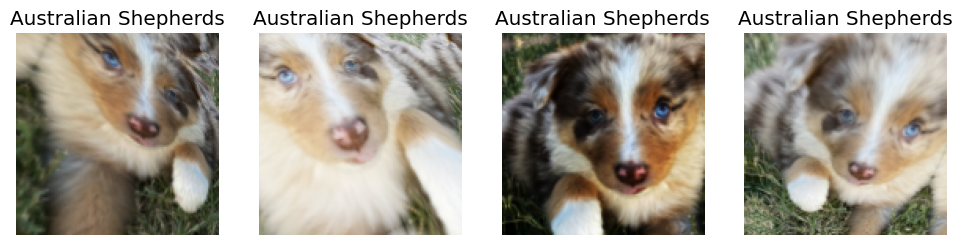
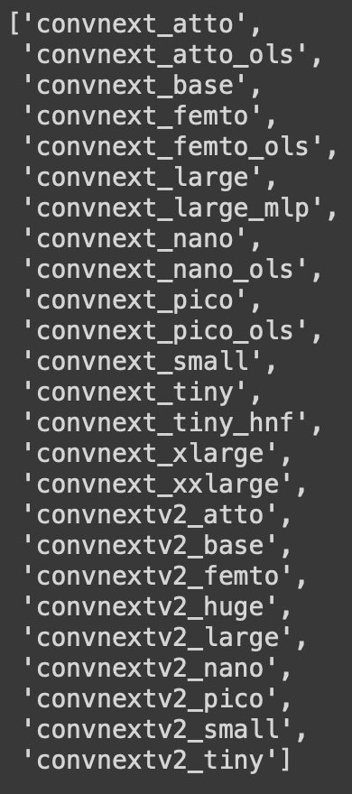
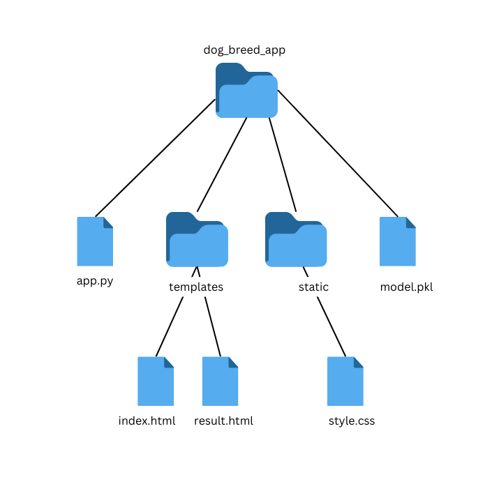
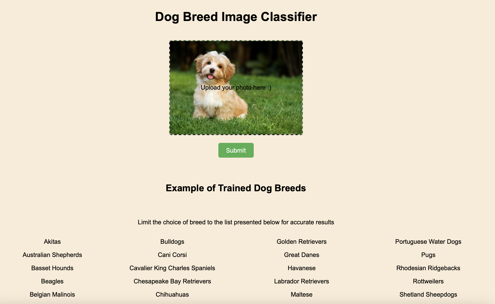

This guide covers the entire process of deploying a dog breed image classification model. The model is locally hosted, and utilizes a RESTful API built with Flask.

In this project, we will build a web application that can classify the breed of a dog given an image provided by the user. We will walk through the entire process, from loading the data and fine-tuning our model to designing the back end and front end using Flask, HTML, and CSS.
So, without further ado, let’s get started.
Data Loading and Model Fine-Tuning in Jupyter Notebook
First, install and load all the packages and dependencies:
import timm # must be imported before fastai
import fastbook
from fastbook import *
from fastai.vision.widgets import *
import requests # for making HTTP requests
from bs4 import BeautifulSoup as bs
from pathlib import Path
import osDownloading Data
In the next steps, we will extract our dataset from a webpage using a method called web scraping. Our target website contains an extensive list of dog breed names. We will use the first 50 breed names and then download 150 different images for each breed using the Python library download_images, which retrieves images directly from Google.
# Fetch the webpage and parse it
URL = "<https://www.akc.org/expert-advice/news/most-popular-dog-breeds-full-ranking-list/>"
page = requests.get(URL)
soup = bs(page.content, "html.parser")This Following line of code uses a list comprehension to extract the text from the first cell of each row within the table body of a HTML document parsed using BeautifulSoup (soup).
To break it down:
soup.select("tbody tr"): This part uses the select method of BeautifulSoup to find all (table row) elements that are descendants of a (table body) element in the parsed HTML document. It returns a list of these elements.[row.td.get_text(strip=True) for row in ...]: This is a list comprehension that iterates over each element (row) found by select and extracts the text from the first cell within that row.row.tdaccesses the first element in the row, andget_text(strip=True)gets the text content of that element, stripping any leading or trailing whitespace.[:50]: Finally, [:50] at the end limits the resulting list of breed names to the first 50 entries, ensuring that only the top 50 breeds are considered.
Now, let’s download images using our list of breeds as keywords for the search engine:
# Set up the working directory
root = Path.cwd() / "dog-breed-DS"
# Query and download images for each breed
if not root.exists():
root.mkdir()
for breed in breeds:
# duckduckgo_search(root, breed, breed, max_results=100)
dest = root/breed
dest.mkdir(exist_ok=True)
download_images(dest, urls=search_images_ddg(f'{breed} dog', max_images=150))
resize_images(dest, dest=dest)Data Cleaning
If you proceed with training your model on the dataset you collected, you might end up with an error similar to this:
OSError: Caught OSError in DataLoader worker process 0.
Original Traceback (most recent call last):
File "/usr/local/lib/python3.10/dist-packages/PIL/ImageFile.py", line 249, in load
s = read(self.decodermaxblock)
...
struct.error: unpack_from requires a buffer of at least 4 bytes for unpacking 4 bytes at offset 0 (actual buffer size is 0)
The above exception was the direct cause of the following exception:
Traceback (most recent call last):
File "/usr/local/lib/python3.10/dist-packages/torch/utils/data/_utils/worker.py", line 308, in _worker_loop
data = fetcher.fetch(index) # type: ignore[possibly-undefined]
...
File "/usr/local/lib/python3.10/dist-packages/PIL/ImageFile.py", line 256, in load
raise OSError(msg) from e
OSError: image file is truncatedThis error merely implies that one or more of your image files is corrupted or truncated. This can happen for various reasons, such as incomplete downloads, network issues, or issues with the image source. In order to fix this issue, you can clean the image dataset by deleting all the corrupted images in a given folder so that only the good ones remain in the directory:
cnt = 0
for breedname in os.listdir(root):
for filename in os.listdir(os.path.join(root, breedname)):
try:
img=Image.open(os.path.join(root, breedname, filename))
except OSError:
print("FILE:", os.path.join(breedname, filename), "is corrupt!")
cnt += 1
os.remove(os.path.join(root, breedname, filename))
print("Successfully Completed Operation! Files Courrupted are ", cnt)Data Augmentation and Loading
At this step, we begin to set up a pipeline to process a dataset of dog images, applying necessary transformations and preparing it for training a deep learning model using the fastai library.
First, we need to create the DataBlock. Let’s take it to smaller pieces and see what each part does:
DataBlock:
DataBlockis a fastai class that allows you to define how to create your dataset. It provides a flexible and simple way to handle data pipelines.blocks: This parameter defines the types of input and output blocks.
ImageBlockis for handling images, andCategoryBlockis for categorical labels (the dog breeds in this case).get_items:
get_image_filesis a function that retrieves all the image file paths.splitter:
RandomSplitter(valid_pct=0.2, seed=42)is used to split the dataset into training and validation sets. Here, 20% of the data is used for validation, and the split is reproducible due to the set seed.get_y:
parent_labelis a function that gets the label for each image, typically by extracting it from the parent directory name.item_tfms:
Resize(129)is an item transformation that resizes each image to 129x129 pixels.
dogs = DataBlock(
blocks=(ImageBlock, CategoryBlock),
get_items=get_image_files,
splitter=RandomSplitter(valid_pct=0.2, seed=42),
get_y=parent_label,
item_tfms=Resize(129)
)In the following cell we are trying to do the data augmentation to enhance the performance of our model:
dogs.new: This creates a new
DataBlockobject with updated transformations.item_tfms:
RandomResizedCrop(129, min_scale=0.5)replaces the previousResize(129). This transformation randomly crops the image to 129x129 pixels with a minimum scale of 0.5, which helps with data augmentation.batch_tfms:
aug_transforms(mult=2)applies a set of data augmentation transformations to the entire batch. Themult=2argument increases the intensity of these transformations.
You can try to change the numbers to find the right adjustment for your model design.
dogs = dogs.new(
item_tfms = RandomResizedCrop(129, min_scale=0.5),
batch_tfms = aug_transforms(mult=2)
)The next method creates the DataLoaders object, which is used to load the data in batches. root is the root directory where the images are stored.
Finally, we show a batch of images from the training set for inspection.

Training the Model
Let’s go ahead and train our model
As you can see we get a training time of 3:53 min on the last epoch.

Thanks to the great work that’s been done by Ross Wightman, we can import the powerful timm library which provides state-of-the-art pre-trained computer vision models. This allows us to improve our model performance. You can learn more about the library through this analysis.
Here are some of the models covered by timm:

Now, training on we get a better result!

Notice the time is much faster and the accuracy increased from 81% to almost 86%!
Lastly, we download our model and we’re done with this part:
Building a RESTful API with Flask
REST APIs have become essential to modern software applications, enabling seamless communication between systems and ensuring data consistency. They facilitate the easy exchange of information between various websites, databases, and SaaS (Software as a Service) applications. Whether you’re developing a mobile app, a web application, or integrating third-party services, understanding how to create a robust REST API is crucial.
There are numerous ways to build a REST API, and leveraging existing frameworks and tools can streamline the process. One such example is Flask, a web framework in Python. With the Flask-RESTful extension, developers can quickly and efficiently develop REST APIs.
Now, let’s dive into the implementation and see how we can create a REST API using Flask and the Flask-RESTful extension.
Setup Your Flask Project
Open VSCode
Create a new directory for your project and navigate into it.
Create a virtual environment:
python -m venv .venvActivate the virtual environment:
On Windows:
.venv\Scripts\activateOn macOS/Linux:
source .venv/bin/activate
Install Flask and fastbook if you haven’t already:
pip install fastbookpip install Flask
Create the following project structure:

Create Your Flask App (
app.py)Import necessary libraries and set up your Flask app.
Define routes for the home page (
index.html) and result page (result.html).Use a form to upload an image on the home page and process the uploaded image on the result page.
from flask import Flask, render_template, request, jsonify, url_for from fastbook import * from fastai import * from fastai.vision import * import os # Define a flask app app = Flask(__name__) root = os.getcwd() filename = 'model.pkl' learn = load_learner(os.path.join(root, filename)) @app.route('/') def index(): # Main page return render_template('index.html') @app.route('/predict', methods=['POST']) def predict(): prediction = single_image_predict(request.files['uploaded-file']) prediction_dict = json.loads(prediction.data.decode('utf-8')) # Convert bytes to string and then to dict return render_template('result.html', percentage=prediction_dict['probability'], prediction=prediction_dict['dog_type']) #function to predict image def single_image_predict(image): img_PIL = Image.open(image) img = tensor(img_PIL) #converting PIL image to tensor learn_inf = learn.predict(img) return jsonify({'dog_type': learn_inf[0][0:], 'probability': str(round(max(learn_inf[2].numpy()*100), 2))}) if __name__ == '__main__': app.run(host="0.0.0.0", port=8000)
Create Your HTML Templates (
index.htmlandresult.html)index.htmlfor the home page with a form to upload the image.result.htmlto display the result (breed of the dog).<!-- index.html --> <!DOCTYPE html> <html> <head> <title>Home</title> <meta name="viewport" content="width=device-width, initial-scale=1.0"> <link rel="stylesheet" type="text/css" href="/static/style.css"> <link rel="stylesheet" type="text/css" href="{{ url_for('static', filename='/styles.css') }}"> </head> <body> <div class="container main"></div> <div class="row"> <div class="col"> <h1 class="header">Dog Breed Image Classifier</h1> <form action="{{ url_for('predict')}}" method="post" enctype="multipart/form-data"> <label for="uploaded-file" class="upload-frame"> Upload your photo here :) <input type="file" id="uploaded-file" class="form-control" name="uploaded-file" style="display: none;" onchange="displayImage(event)"> </label> <input type="hidden" name="image_path" id="image_path"> <div class="button-group"> <!-- <button class="upload-photo-btn" type="button" onclick="document.getElementById('file-input').click()">Upload Photo</button> --> <button class="submit-btn" type="submit">Submit</button> </div> </form> <script> function displayImage(event) { var file = event.target.files[0]; var reader = new FileReader(); reader.onload = function(e) { var imageUrl = e.target.result; var uploadFrame = document.querySelector('.upload-frame'); uploadFrame.style.backgroundImage = 'url(' + imageUrl + ')'; document.getElementById('image_path').value = imageUrl; // Set the value of the hidden input field }; reader.readAsDataURL(file); } function validateForm(event) { var fileInput = document.getElementById('uploaded-file'); if (fileInput.files.length === 0) { alert('Please upload a photo first'); event.preventDefault(); // Prevent the form from submitting } } document.querySelector('form').addEventListener('submit', validateForm); </script> </div> </div> </body> </html><!-- result.html --> <!DOCTYPE html> <html> <head> <title></title> <meta name="viewport" content="width=device-width, initial-scale=1.0"> <link rel="stylesheet" type="text/css" href="/static/style.css"> <link rel="stylesheet" type="text/css" href="{{ url_for('static', filename='/styles.css') }}"> </head> <body> <header> <div class="container"> <h1 class="header">Classification Results</h1> </div> </header> <div class="results"> <h3>This is {{ percentage }}% {{ prediction }}</h3> <p>Let's play again! Hit the Home link below :)</p> <div style="text-align: center;"> <a href="{{ url_for('index') }}" class="back-btn">Home</a> </div> </div> </body> </html>
Add Pretrained Model for Dog Breed Classification
Use a the downloaded pretrained model for dog breed classification.
Load the model in your Flask app and use it to classify the uploaded image.
Run and Test Your Flask App
Run your Flask app:
python app.pyAccess your web app in a browser at
http://192.168.4.218:8000(or any link that shows up on your terminal) to upload a dog photo and see the result!

Next Step: Deployment
So far, we have learned how to create our deep learning-based web app. We designed both the backend and the frontend. The final step is to deploy our model so everyone can access our application on their own devices.
There are many options for choosing the right platform, but one of the most widely used deployment environments is a cloud service provider. Cloud services are ubiquitous these days, making it essential for machine learning practitioners and tech experts to stay ahead with a solid understanding of these services. One of the most important cloud service providers in the job market is AWS.
Deploying a project of this scale on AWS can be tricky (and costly). If you have never worked with the platform before and want to do some warm-up practices with DL models, the best alternative options would be using Heroku, Hugging Face, or Render.
Alright, we will stop the project at this point, but you can keep experimenting with the code and perhaps create your own image classification app with your chosen data!
Finally, I want to leave you with some sources that inspired me for this project. You can also find my code in this repository. Let me know what you think, and as always, all feedbacks are welcome! :)